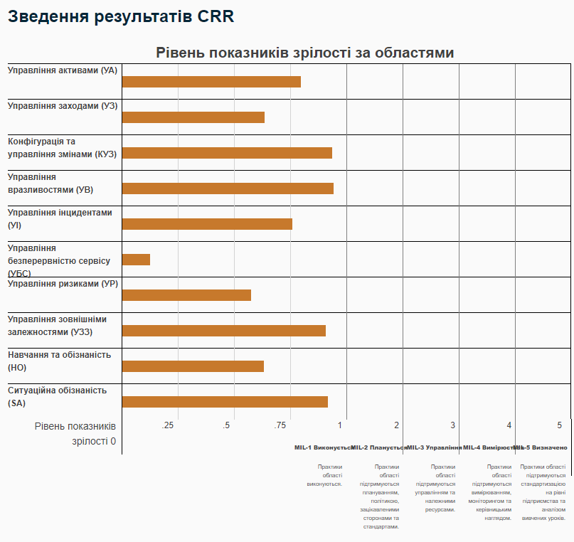

|
<< Click to Display Table of Contents >> Navigation: 2. CRR Оцінювання CSET > 2.2. Оцінювання > 2.2.4. Оцінювання CRR > Як трактувати звіт за результатами оцінювання? |
Бали
Організація може скористатись CRR оцінюванням для створення плану дій щодо усунення виявлених під час оцінювання слабких сторін та використання сильних сторін.
Почати варто з підсумкового звіту про результати оцінювання CRR.
Пояснення до Рис.1: графік відображає результати діяльності організації у вигляді лінійної діаграми.
MIL1 відображає, чи була мета повністю досягнута (зелений колір), частково досягнута (жовтий колір) або не досягнута (червоний колір).
Для досягнення цілі необхідно виконати всі практики, що входять до її складу.
Рівень з MIL2 по MIL5 відображає, чи кожна практика на певному рівні зрілості виконана (зелений колір), частково виконана (жовтий колір) або не виконана (червоний колір).
Звичайна мета організації може полягати в тому, щоб спочатку досягти рівня MIL1 у всіх доменах кібербезпеки, а потім, виходячи з допустимого рівня ризику організації, вибрати інші домени для удосконалення. Організація може використовувати графік для зосередження на визначенні пріоритетів та впровадженні процесів у доменах кібербезпеки, які вона вирішила вдосконалити.
Важливо зазначити, що вищий рівень зрілості може бути досягнутий організацією лише в тому випадку, якщо вона відповідає всім правилам усіх рівнів зрілості, що знаходяться нижче.
Іншими словами, організація, яка не виконує всі процедури кібербезпеки на рівні MIL1 у певному домені кібербезпеки, також не зможе досягти рівня MIL2 у цьому домені, навіть якщо вона задовольнить (відповість "Так") всі вимоги на рівні MIL2.
Індекси MIL є приблизним показником зрілості організації.
Шкала MIL є дуже корисною як ефективний спосіб визначення напрямів вдосконалення та порівняння кіберзрілості в різних доменах кібербезпеки.
Підсумкові результати можуть дати початкове уявлення про те, куди слід інвестувати для поліпшення кібербезпеки, звертаючи увагу на відсутність запроваджених заходів.
Як показано на Рис.1, кольорова карта результатів у доменах у поєднанні з результатами в окремих доменах (див. Рис.2) є корисною для визначення напрямів для вдосконалення.
Вибірка з окремих доменів
Пояснення до Рис.3: рівень MIL1 не досягнуто у доменах - управління активами, управління ризиками, управління зовнішніми залежностями та ситуатаційна обізнаність.
Організації повинні визначити свій власний шлях до удосконалення, виходячи, наприклад, зі своїх організаційних потреб:
•якщо організація звертається до зовнішніх постачальників за наданням критично важливої послуги, а у домені кібербезпеки "Управління зовнішніми залежностями" не впроваджено жодних заходів, організації доведеться спершу розпочати удосконалення саме в цій сфері;
•якщо організація має проблеми з дотриманням нормативних вимог, які не вирішуються і можуть призвести до значних витрат для організації, якщо їх не виправити, то організації, можливо, доведеться спершу вирішити ці проблеми з відповідними процесами.
Звіти за окремими напрямками (див. Рис.2) містять деталізацію на рівні питань, щоб допомогти організаціям зосередитися на певних практиках для удосконалення.
Звіт про управління окремим доменом
У варіанті управління засобами контролю (домен "Управління заходами"), показаному на Рис.4, все, що потрібно для досягнення рівня MIL2, - це запровадження стандартів та інструкцій щодо діяльності з управління контролями. Це може бути відносно простим завданням. Після цього організація досягне рівня MIL5, оскільки всі інші заходи будуть виконані.
Звіт про виконання CRR MIL
Пояснення до Рис.5: наведений звіт містить детальний огляд завдань і процедур рівня кіберзрілості MIL1 для кожного домену CRR.
Наведено формулювання завдань з графічним зображенням кількості пов'язаних з ними практик, які виконані, виконані неповністю або не виконані для кожної цілі.
Підсумок виконання завдань MIL1 також надається для кожного домену і для всієї CRR.
Відображення продуктивності CRR
Підсумковий звіт результатів CRR та Звіт про відсоток завершених заходів
Підсумки результатів CRR (див. Рис.7) та Звіт про відсоток завершених заходів у розрізі доменів кібербезпеки (див. Рис.8) слід використовувати разом при аналізі результатів.
Для ілюстрації звернемося до домену "Управління активами" кожної діаграми.
 Рис.7. Підсумок результатів дослідження CRR |
|
На Рис.7 показано, що MIL1 не був досягнутий для домену "Управління вразливостями".
На Рис.8 показано, що 73% практик домену "Управління вразливостями" було виконано.
Важливо пам'ятати, що MIL є сумарним показником: для досягнення вищого MIL необхідно виконати всі практики на всіх нижчих рівнях MIL.
Зображення оцінки системи кібербезпеки NIST (NIST Cybersecurity Framework Scoring Depictions)
Оцінка CRR також дозволяє організації оцінити свої можливості відносно NIST SCF.
Кожна процедура CRR співвіднесена з відповідними категоріями та підкатегоріями NIST SCF.
Організація може використовувати підсумкові результати для зосередження на визначенні пріоритетних напрямків, які вона вирішила покращити. Наприклад, організація виконує 63% практик, що складають функцію ідентифікації. результати також показують, що організація не повністю виконує всі заходи, які відносяться до категорії "Стратегія управління ризиками". Тому організація може вибрати пріоритетне впровадження практик, які призведуть до підвищення категорії "Стратегія управління ризиками".
Організація також може використовувати діаграму "Короткий огляд категорій структури кібербезпеки NIST" (див. Рис.9) для перегляду охоплення організацією категорій і підкатегорій NIST CSF і відстеження своїх дій з їх вдосконалення. Графік є динамічним переходом для користувача, на який можна швидко перейти для перегляду практик CRR, що співвіднесені з конкретними категоріями.
Корисні посилання:
1.Introducing OCTAVE Allegro: Improving the Information Security Risk Assessment Process, http://resources.sei.cmu.edu/library/asset-view.cfm?assetid=8419
2.CERT® Resilience Management Model (CERT®-RMM), http://www.cert.org/resiliency/rmm.html DHS Risk Lexicon, http://www.dhs.gov/xlibrary/assets/dhs-risk-lexicon-2010.pdf
3.Draft Special Publication 800-16 Revision 1, Information Security Training Requirements: A Role-and Performance-Based Model, http://csrc.nist.gov/publications/drafts/800-16-rev1/draft_sp800_16_rev1_2nd-draft.pdf
4.FIPS Publication 199 Standards for Security Categorization of Federal Information and Information Systems, http://csrc.nist.gov/publications/fips/fips199/FIPS-PUB-199-final.pdf
5.FIPS Publication 200, Minimum Security Requirements for Federal Information and Information Systems, http://csrc.nist.gov/publications/fips/fips200/FIPS-200-final-march.pdf
6.Handbook for Computer Security Incident Response Teams (CSIRTs), http://resources.sei.cmu.edu/library/asset-view.cfm?assetid=6305
7.Managing for Enterprise Security, http://resources.sei.cmu.edu/library/asset-view.cfm?assetid=7019
8.Smart Grid Maturity Model (SGMM), Version 1.2: Model Definition, http://resources.sei.cmu.edu/library/asset-view.cfm?assetid=10035
9.Special Publication 800-18 Revision 1, Guide for Developing Security Plans for Federal Information Systems, http://csrc.nist.gov/publications/nistpubs/800-18-Rev1/sp800-18-Rev1-final.pdf
10.Special Publication 800-30, Risk Management Guide for Information Technology Systems, http://csrc.nist.gov/publications/nistpubs/800-30-rev1/sp800_30_r1.pdf
11.Special Publication 800-34, Contingency Planning for Federal Information Systems, http://csrc.nist.gov/publications/nistpubs/800-34-rev1/sp800-34-rev1_errata-Nov11-2010.pdf
12.Special Publication 800-37 Revision 1, Guide for Applying the Risk Management Framework to Federal Information Systems, http://csrc.nist.gov/publications/nistpubs/800-37-rev1/sp800-37-rev1-final.pdf
13.CRR Method Description and Self-Assessment User Guide Appendix C: References Special Publication 800-39, Managing Information Security Risk Organization, Mission, and Information System View, http://csrc.nist.gov/publications/nistpubs/800-39/SP800-39-final.pdf
14.Special Publication 800-40 Version 3.0, Creating a Patch Management and Vulnerability Management Program, http://nvlpubs.nist.gov/nistpubs/SpecialPublications/NIST.SP.800-40r3.pdf
15.Special Publication 800-61, Computer Security Incident Handling Guide, http://nvlpubs.nist.gov/nistpubs/SpecialPublications/NIST.SP.800-61r2.pdf
16.Special Publication 800-70, National Checklist Program for IT Products: Guidelines for Checklist Users and Developers, http://csrc.nist.gov/publications/nistpubs/800-70-rev2/SP800-70-rev2.pdf
17.Special Publication 800-84, Guide to Test, Training, and Exercise Programs for IT Plans and Capabilities, http://csrc.nist.gov/publications/nistpubs/800-84/SP800-84.pdf
18.Special Publication 800-128, Guide for Security Configuration Management of Information Systems, http://csrc.nist.gov/publications/nistpubs/800-128/sp800-128.pdf
19.Special Publication 800-137, Information Security Continuous Monitoring (ISCM) for Federal Information Systems and Organizations, http://csrc.nist.gov/publications/nistpubs/800-137/SP800-137-Final.pdf
підготовлено у редакторі Help & Manual 9.3.0
{kind=link}
{kind=link}
{kind=link}
{kind=link}
{kind=link}
{kind=link}
{kind=link}
{kind=link}
{kind=link}